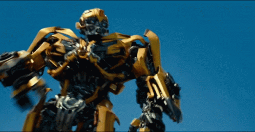

Florian Lemarchant
jan. 21, 2021
Zoom
While the Transformer architecture has become the de-facto standard for natural language processing tasks, its applications to computer vision remain limited. In vision, attention is either applied in conjunction with convolutional networks, or used to replace certain components of convolutional networks while keeping their overall structure in place. It has been shown that this reliance on CNNs is not necessary and a pure transformer applied directly to sequences of image patches can perform very well on multiple image tasks.
Implementation of a transformer using pytorch and pytorch-lightning